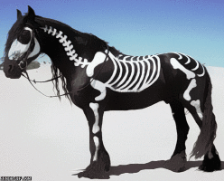
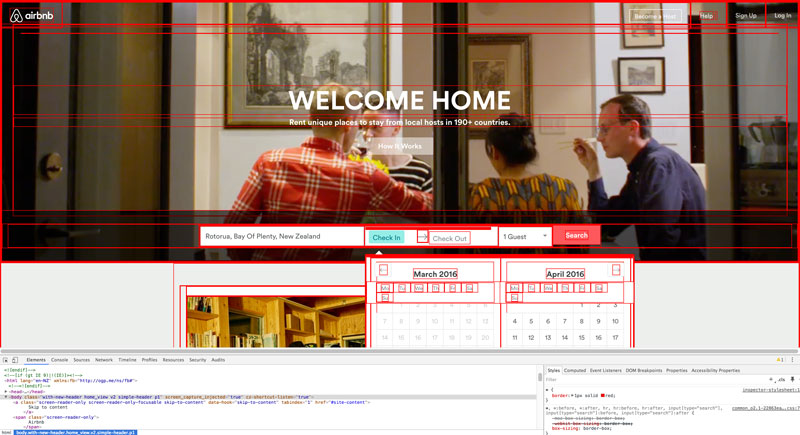
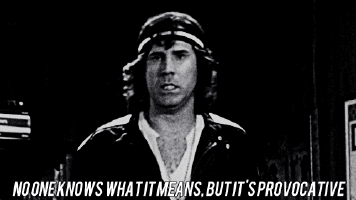
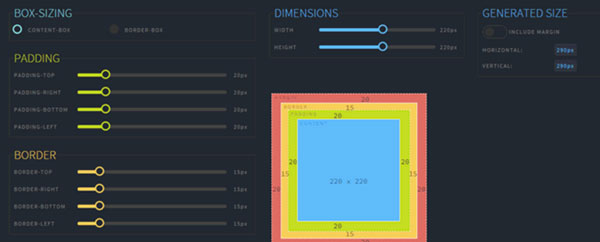

Can you think of an analogy to describe HTML, CSS and the DOM ?
HTML is the bones and DOM is the heirarchy that connects all the bones in a meaningful way so that the body can function effectively. CSS is all the layers on top such as the skin, muscles, eyes etc that affect the look.
What is meant by boxifying the design ?
 Boxifying is the process of dividing the elements of a web page design into boxes so that the DOM structure and the layout of elements within a page can be outlined. This process is usually done before jumping into HTML and CSS. It can also be used to understand the layout and DOM structure of already exsting web pages.
What is the box model ?
See the Pen angular interactive box-model diagram by Caroline Artz (@carolineartz) on CodePen.
All HTML elements can be considered as boxes. In CSS, the term "box model" is used when talking about design and layout. The CSS box model is essentially a box that wraps around every HTML element. It consists of: margins, borders, padding, and the actual content.